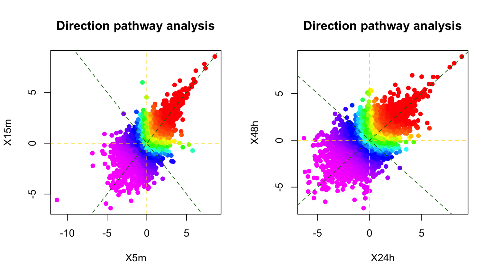

Pathway analysis is an essential component in most of omic science. Here, we will introduce basic methods for “1-dimension” pathway analysis; and more advanced methods for implemented in the R package directPA for performing “2 and 3-dimentional” pathway analyses (Pengyi Yang et al. 2014). We will start with proteomic data and look at gene-centric pathways and then extend to phosphoproteomic data and look at signalling pathways.
Load in packages
suppressPackageStartupMessages({
library(PhosR)
library(directPA)
})We will first use a SILAC-based proteomic dataset for demonstration of gene-centric pathway analysis. It contains the plasma membrane (PM) proteome of insulin responsive 3T3-L1 adipocytes under three different treatment conditions and a basal condition. The three treatment conditions are (1) insulin stimulation; (2) wortmannin inhibition plus insulin stimulation; and (3) MK inhibition plus insulin stimulation. Proteomes in this data meansured by using SILAC-based mass spectrometry. The dataset has already been pre-processed into log2 fold changes of (1) Ins vs Basal; (2) Ins+Wmn vs Basal; and (3) Ins+MK vs Basal.
This dataset is already included in the package directPA. We can load this example dataset into current working environment as data(PM).
Let us start with conventional 1-dimensional pathway analysis. The following demonstrates finding pathways that are enriched in insulin stimulation compared to basal. directPA package has built in pathway annotations and PhosR package implements both over-representation test and rank-based test. The pathway annotations included in directPA are from KEGG database and Reactome database. You can always provide your own pathway annotations such as other popular databases (e.g. gene ontology or GO).
# load pathway annotations
data(PM)
data(Pathways)
geneSet <- names(sort(PM[,1], decreasing = TRUE))[1:100]
path1 <- pathwayOverrepresent(geneSet, annotation=Pathways.KEGG, universe = rownames(PM), alter = "greater")
path2 <- pathwayRankBasedEnrichment(PM[,1], annotation=Pathways.KEGG, alter = "greater")
path1[1:5,c("pvalue", "# of substrates")]## pvalue
## KEGG_SNARE_INTERACTIONS_IN_VESICULAR_TRANSPORT "0.0766668712824008"
## KEGG_RIBOSOME "0.140645733814865"
## KEGG_N_GLYCAN_BIOSYNTHESIS "0.483905192574014"
## KEGG_STEROID_BIOSYNTHESIS "0.527320456676819"
## KEGG_RENIN_ANGIOTENSIN_SYSTEM "0.838917396716807"
## # of substrates
## KEGG_SNARE_INTERACTIONS_IN_VESICULAR_TRANSPORT "7"
## KEGG_RIBOSOME "12"
## KEGG_N_GLYCAN_BIOSYNTHESIS "5"
## KEGG_STEROID_BIOSYNTHESIS "2"
## KEGG_RENIN_ANGIOTENSIN_SYSTEM "1"path2[1:5,c("pvalue", "# of substrates")]## pvalue
## KEGG_RIBOSOME "4.29100890328692e-10"
## KEGG_SNARE_INTERACTIONS_IN_VESICULAR_TRANSPORT "6.81644137750794e-05"
## KEGG_N_GLYCAN_BIOSYNTHESIS "6.89092354625917e-05"
## KEGG_PROTEIN_EXPORT "0.00235739226937965"
## KEGG_GLYCEROPHOSPHOLIPID_METABOLISM "0.00335588047711627"
## # of substrates
## KEGG_RIBOSOME "44"
## KEGG_SNARE_INTERACTIONS_IN_VESICULAR_TRANSPORT "17"
## KEGG_N_GLYCAN_BIOSYNTHESIS "11"
## KEGG_PROTEIN_EXPORT "5"
## KEGG_GLYCEROPHOSPHOLIPID_METABOLISM "12"plot(-log10(as.numeric(path1[names(Pathways.KEGG),1])), -log10(as.numeric(path2[names(Pathways.KEGG),1])), xlab="Overrepresentation (-log10 pvalue)", ylab="Rank-based enrichment (-log10 pvalue)", main="Comparison of 1D pathway analyses")What if we want to find the pathways that are up-regulated in insulin stimulation vs basal but inhibited by wortmannin or MK? Clearly, conventional 1-dimensional pathway analysis can not directly be applied to address this question. That is why we have implemented a 2-dimensional direction pathway analysis method to address this. Below is the demonstration for this.
par(mfrow=c(1,2))
dpa1 <- directPA(PM[,c(1,2)], direction=pi/2, annotation=Pathways.KEGG, main="Direction pathway analysis")
dpa2 <- directPA(PM[,c(1,3)], direction=pi/2, annotation=Pathways.KEGG, main="Direction pathway analysis")dpa1$pathways[1:5,]## NULLdpa2$pathways[1:5,]## NULLWe can obtain the pvalues of genes as how significant they are in the direction we are testing using dpa1$gene.pvalues. Below we plot for genes that are active in insulin stimulation and inhibited by either wortmannin or MK. As can be seen, some of the genes are different (i.e. inhibited by wortmannin only or MK only). We can dissect these two conditions and their corresponding pathways using, again, 2D test.
par(mfrow=c(1,2))
plot(dpa1$gene.pvalues[rownames(PM)], dpa2$gene.pvalues[rownames(PM)], xlab="Gene pvalue from dpa1", ylab="Gene pvalue from dpa2")
dpa3 <- directPA(PM[,c(2,3)], direction=pi/2, annotation=Pathways.KEGG, main="Direction pathway analysis")dpa3$pathways[1:5,]## NULLThe above repeatitve 2D test is good at answering comparisons involving 2 treatments and 1 control. What if we want to ask a question such as “genes that are up-regulated in insulin stimulation; inhibited by MK; but not inhibited by wortmannin”? For this, we need a 3D test which is what we will introduce below.
dPA <- directPA(Tc=PM, direction=c(1,1,-1), annotation=Pathways.KEGG, main="Direction pathway analysis")
dPA$gst[order(unlist(dPA$gst[,1])),][1:20,]## pvalue size
## KEGG_PEROXISOME 4.450701e-05 38
## KEGG_STEROID_BIOSYNTHESIS 0.0007532071 7
## KEGG_ANTIGEN_PROCESSING_AND_PRESENTATION 0.00219594 10
## KEGG_LIMONENE_AND_PINENE_DEGRADATION 0.006452643 5
## KEGG_N_GLYCAN_BIOSYNTHESIS 0.008243181 11
## KEGG_RIBOSOME 0.01290797 44
## KEGG_PARKINSONS_DISEASE 0.02034015 50
## KEGG_BIOSYNTHESIS_OF_UNSATURATED_FATTY_ACIDS 0.02246491 10
## KEGG_PROTEIN_EXPORT 0.03451366 5
## KEGG_BETA_ALANINE_METABOLISM 0.05575214 8
## KEGG_LYSINE_DEGRADATION 0.07957553 13
## KEGG_STEROID_HORMONE_BIOSYNTHESIS 0.08834657 7
## KEGG_OXIDATIVE_PHOSPHORYLATION 0.09396306 58
## KEGG_GLYCEROPHOSPHOLIPID_METABOLISM 0.09478043 12
## KEGG_ALZHEIMERS_DISEASE 0.09791927 55
## KEGG_FATTY_ACID_METABOLISM 0.09982681 20
## KEGG_ALDOSTERONE_REGULATED_SODIUM_REABSORPTION 0.1043517 6
## KEGG_GLYCEROLIPID_METABOLISM 0.132431 10
## KEGG_CARDIAC_MUSCLE_CONTRACTION 0.1331192 18
## KEGG_HUNTINGTONS_DISEASE 0.1478461 59The above demonstrated some gene-centric pathway analyses using proteomic data. Now, we will use the same methodology for testing kinase enrichment in phosphoproteomic data.
In this section, we will use an embryonic stem cell (ESC) differentiation dataset for demonstration. This dataset contains 12 time points profiling the transition of ESCs to epiblast-like cells (EpiLCs). Details regarding the dataset can be found in (Pengyi Yang et al. 2019). The quantification of the phophorylation at each time point were converted into log2 fold change with respect to the first time point of 0 hour.
This dataset is included in the package PhosR. We can load this example dataset into current working environment as data(phosphoESC).
One key aspect in studying signalling pathways is to identify key kinases that are involved in signalling cascades. To identify these kinases, we make use of kinase-substrate annotation databases such as PhosphoSitePlus (Hornbeck et al. 2012) and Phospho.ELM (Dinkel et al. 2011). These databases are included in the PhosR and directPA packages already. To access them, simply load the package and access the data by data("PhosphoSitePlus") and data("PhosphoELM").
Back to the example. Now, suppose we partition the signalling into early (5-15 minutes) and late (24-48h) stages during the differentiation process, we can then identify kinases that are active in these time points by testing kinase-substrates that are up-regulated in phosphorylation level in both time points as below:
par(mfrow=c(1,2))
data("phosphoESC")
data("PhosphoSitePlus")
rownames(phosphoESC) <- sapply(strsplit(rownames(phosphoESC), ";"), function(x)paste(toupper(x[1]), x[2], "", sep=";"))
kPA1 <- kinasePA(Tc=phosphoESC[,c("X5m","X15m")], direction=0, annotation=PhosphoSite.mouse, main="Direction pathway analysis")
kPA1$kinase[1:5,]## pvalue size
## Abl NA 1
## Ack NA 0
## Akt1 2.426171e-07 18
## Akt2 NA 0
## Akt3 NA 1kPA2 <- kinasePA(Tc=phosphoESC[,c("X24h","X48h")], direction=0, annotation=PhosphoSite.mouse, main="Direction pathway analysis")
kPA2$kinase[1:5,]## pvalue size
## Abl NA 1
## Ack NA 0
## Akt1 6.428913e-05 18
## Akt2 NA 0
## Akt3 NA 1There is also a function called perturbPlot2d for testing and visualising activity of all kinases on all possible directions. Below are the results from using this function. Details of this function and its implementation is described in our publication kinase perturbation analysis (kinasePA) (Yang et al. 2016).
z1 <- perturbPlot2d(Tc=phosphoESC[,c("X5m","X15m")], annotation=PhosphoSite.mouse, cex=1, xlim=c(-5, 12), ylim=c(-5, 11), main="Kinase perturbation analysis")z2 <- perturbPlot2d(Tc=phosphoESC[,c("X24h","X48h")], annotation=PhosphoSite.mouse, cex=1, xlim=c(-5, 11), ylim=c(-5, 11), main="Kinase perturbation analysis")While the above kinase-substrate-based analysis of phosphoproteomic data is informative, the annotation of kinases and their substrates in current databases are quite limited. This leads to the limited use of a small subset of phosphosites whereas the majority of the identified phosphosites in the phosphoproteomic data are not used for the analysis.
One possible way to utilise more from the phosphoproteomic data is to perform gene-centric analysis by summarising phosphosite-level information to each protein. The following is an example for such type of analysis using the phosCollapse function in package PhosR and then directPA for gene-centric 2D pathway analysis.
# summarise phospho-level information to genes
phosphoESC.sum <- phosCollapse(phosphoESC, gsub(";.+", "", rownames(phosphoESC)), stat = apply(abs(phosphoESC), 1, max), by = "max")
par(mfrow=c(1,2))
dPA1 <- directPA(Tc=phosphoESC.sum[,c("X5m","X15m")], direction=0, annotation=Pathways.reactome, main="Direction pathway analysis")
dPA1$pathways[1:5,]## NULLdPA2 <- directPA(Tc=phosphoESC.sum[,c("X24h","X48h")], direction=0, annotation=Pathways.reactome, main="Direction pathway analysis")dPA2$pathways[1:5,]## NULLsessionInfo()## R version 3.6.0 (2019-04-26)
## Platform: x86_64-apple-darwin15.6.0 (64-bit)
## Running under: macOS 10.15
##
## Matrix products: default
## BLAS: /System/Library/Frameworks/Accelerate.framework/Versions/A/Frameworks/vecLib.framework/Versions/A/libBLAS.dylib
## LAPACK: /Library/Frameworks/R.framework/Versions/3.6/Resources/lib/libRlapack.dylib
##
## locale:
## [1] en_AU.UTF-8/en_AU.UTF-8/en_AU.UTF-8/C/en_AU.UTF-8/en_AU.UTF-8
##
## attached base packages:
## [1] parallel stats4 stats graphics grDevices utils datasets
## [8] methods base
##
## other attached packages:
## [1] Biobase_2.44.0 GenomicRanges_1.36.0 GenomeInfoDb_1.20.0
## [4] IRanges_2.18.0 S4Vectors_0.22.1 BiocGenerics_0.30.0
## [7] scMerge_1.0.0 PhosR_0.1.0 directPA_1.4
## [10] calibrate_1.7.2 MASS_7.3-51.4 rgl_0.100.19
##
## loaded via a namespace (and not attached):
## [1] colorspace_1.4-1 RcppEigen_0.3.3.5.0
## [3] class_7.3-15 htmlTable_1.13.1
## [5] XVector_0.24.0 base64enc_0.1-3
## [7] rstudioapi_0.10 proxy_0.4-23
## [9] codetools_0.2-16 splines_3.6.0
## [11] knitr_1.23 Formula_1.2-3
## [13] jsonlite_1.6 cluster_2.0.9
## [15] shiny_1.3.2 BiocManager_1.30.4
## [17] compiler_3.6.0 backports_1.1.4
## [19] assertthat_0.2.1 Matrix_1.2-17
## [21] lazyeval_0.2.2 limma_3.40.6
## [23] later_0.8.0 acepack_1.4.1
## [25] htmltools_0.3.6 tools_3.6.0
## [27] rsvd_1.0.1 gtable_0.3.0
## [29] glue_1.3.1 GenomeInfoDbData_1.2.1
## [31] dplyr_0.8.1 Rcpp_1.0.1
## [33] bbmle_1.0.20 gdata_2.18.0
## [35] nlme_3.1-140 iterators_1.0.10
## [37] crosstalk_1.0.0 xfun_0.7
## [39] stringr_1.4.0 mime_0.6
## [41] miniUI_0.1.1.1 irlba_2.3.3
## [43] gtools_3.8.1 statmod_1.4.32
## [45] dendextend_1.12.0 zlibbioc_1.30.0
## [47] scales_1.0.0 pcaMethods_1.76.0
## [49] promises_1.0.1 SummarizedExperiment_1.14.0
## [51] RColorBrewer_1.1-2 SingleCellExperiment_1.6.0
## [53] yaml_2.2.0 gridExtra_2.3
## [55] ggplot2_3.1.1 rpart_4.1-15
## [57] latticeExtra_0.6-28 stringi_1.4.3
## [59] foreach_1.4.4 e1071_1.7-1
## [61] checkmate_1.9.3 caTools_1.17.1.2
## [63] BiocParallel_1.18.0 manipulateWidget_0.10.0
## [65] rlang_0.4.0 pkgconfig_2.0.2
## [67] matrixStats_0.55.0 bitops_1.0-6
## [69] M3Drop_1.10.0 evaluate_0.13
## [71] lattice_0.20-38 purrr_0.3.2
## [73] ruv_0.9.7 htmlwidgets_1.3
## [75] tidyselect_0.2.5 plyr_1.8.4
## [77] magrittr_1.5 R6_2.4.0
## [79] gplots_3.0.1.1 Hmisc_4.2-0
## [81] DelayedArray_0.10.0 pillar_1.4.1
## [83] foreign_0.8-71 mgcv_1.8-28
## [85] survival_2.44-1.1 RCurl_1.95-4.12
## [87] nnet_7.3-12 tibble_2.1.2
## [89] crayon_1.3.4 KernSmooth_2.23-15
## [91] rmarkdown_1.13 viridis_0.5.1
## [93] grid_3.6.0 data.table_1.12.2
## [95] reldist_1.6-6 digest_0.6.19
## [97] webshot_0.5.1 xtable_1.8-4
## [99] httpuv_1.5.1 numDeriv_2016.8-1
## [101] munsell_0.5.0 viridisLite_0.3.0